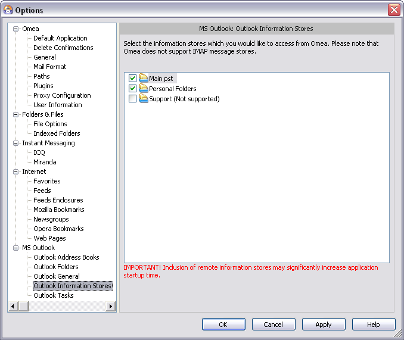

Outlook Information Stores
You can access this option from the Main menu: Tools | Options: MS Outlook: Outlook Information Stores
This page enables you to specify which of your information stores in MS Outlook you want to have Omea index and keep synchronized with Outlook. The most common information stores are Outlook Personal Folders and Archive Folders. It’s possible that you could have other information stores set up in Outlook. Omea detects all the information stores in your Outlook installation and lists them here.
To include an information store in Omea’s indexing and synchronization, check the box next to the name.
Outlook Information Stores options in the Options Dialog
When you work with several information stores and turn on or off the information stores (include or exclude the information stores from synchronizing), you should also customize the MS Outlook settings in Omea Pro for each information store. So when you for example include one information store into synchronizing, you need to customize the Outlook Folders, Outlook Address Books and Outlook Tasks options.